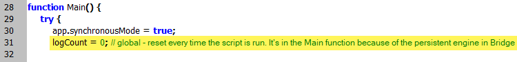

Log
Error log function
function ErrorLog(text) {
var file = new File("~/Desktop/" + scriptName + " - error log.txt");
file.encoding = "UTF-8";
if (file.exists) {
file.open("e");
file.seek(0, 2);
}
else {
file.open("w");
if (errorsArr.length == 0) file.write("=========================================================\rDate & time: " + GetDate() + "\r=========================================================\r");
}
file.write(text + "\r");
file.close();
errorsArr.push(text);
}
Log message function
function LogMessage(msg) {
if (log) {
var file = new File("~/Desktop/" + scriptName + " log.txt");
file.encoding = "UTF-8";
if (file.exists) {
file.open("e");
file.seek(0, 2);
}
else {
file.open("w");
}
file.write(msg + "\r");
file.close();
}
}
This function allows logging errors into another file and overwriting the file if it already exists.
Note: logCount = 0; is global variable that is reset every time the script is run. in Bridge, it should be inside a function –– e.g. Main –– because of the persistent engine.

var scriptName = "Script name",
debug = false,
log = true,
logOverwrite = true,
logCount = 0,
logErrCount = 0,
errArr = [];
function Main() {
var curFunc = arguments.callee.toString().match(/function ([^\(]+)/)[1];
Log("===>> " + curFunc + " ===\r");
Log("==========");
var startTime = new Date();
var endTime = new Date();
var duration = GetDuration(startTime, endTime);
var report = countRelinkedFiles + " file" + ((countRelinkedFiles == 1) ? " was" : "s were") + " relinked.\n(Time elapsed: " + duration + ")";
if (errArr.length > 0) {
var errTxt = "\n\n" + errArr.length + " error" + ((errArr.length == 1) ? "" : "s") + " occured. See the error log for details.";
report += errTxt;
}
Log("\r=== " + curFunc + " ===>>\r");
}
function Log(text, err) {
if (log) {
if (typeof err == "undefined") err = false;
if (typeof logOverwrite == "undefined") logOverwrite = false;
var file = new File("~/Desktop/" + scriptName + " - " + ((err) ? "Error " : "") + "Log.txt");
if (logOverwrite && ((err) ? logErrCount == 0 : logCount == 0)) {
if (file.exists) file.remove();
}
if ((!err && logCount == 0) || (err && logErrCount == 0)) { // add header before the first error during a session
text = ((file.exists) ? "\r" : "") + "========== " + new Date().toLocaleString() + " ==========\r" + text;
}
file.encoding = "UTF-8";
if (file.exists) {
file.open("e");
file.seek(0, 2);
}
else {
file.open("w");
}
file.write(text + "\r");
file.close();
if (err) {
errArr.push(text);
logErrCount++;
}
else {
logCount++;
}
}
}
See also Logging with a smile
extendscript-logger by theasci
extendscript-logger by npm